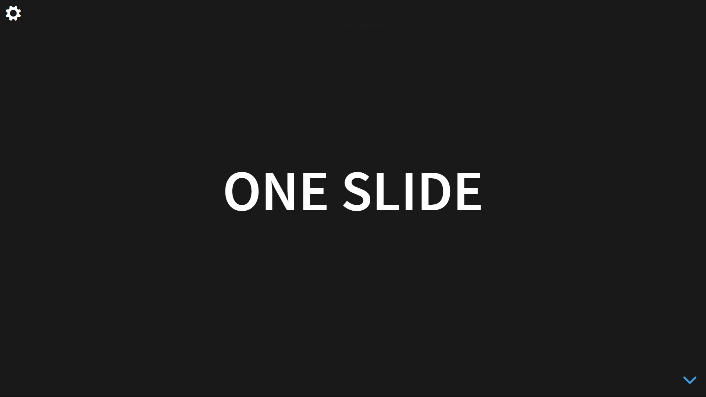
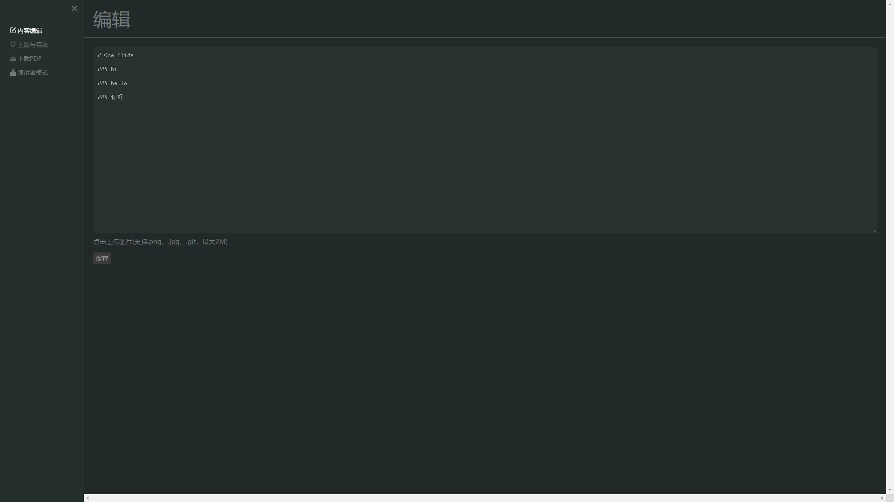

项目经历
—— 小财迷记账
使用技术
Vue，Vue Router，Vuex，TypeScript，SCSS，LocalStorage，dayjs
项目概述
- 使用Vue全家桶实现的一款单页面移动端记账应用。
- 使用VueRouter将应用划分为记账，标签，统计三个分页面，实现了记账信息保存，标签管理，数据统计展示等主要功能。
- 使用Vuex+LocalStorage实现状态管理，将记账信息和标签信息存储在LocalStorage中.
—— Pomodoro番茄钟
使用技术
React，Redux，React Redux，React Router，TypeScript，SCSS， SVG绘制，axios，antd，dayjs，lodash
项目描述
- 使用React + React Router + Redux + axios实现注册/登录/跳转页面的功能。
- 使用SVG绘制折线图。
- 使用Hooks API完成倒计时功能模块。
- 详细的历史记录，并可对记录进行修改，恢复和删除。


—— 极简PPT
使用技术
是以reveal.js为基础，使用原生JS添加了一些小功能制作的一款演讲工具。
功能描述
一款使用Markdown语法快速制作PPT的在线应用。 拥抱极简主义，让工作更高效。
主要技术点：
- 将Markdown转化成PPT上的文字。
- 使用leancloud增强编辑器的上传图片功能。

